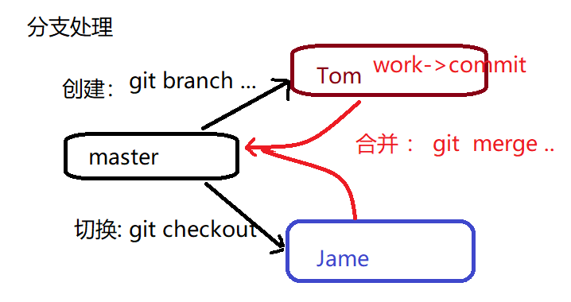

git是一个开源的分布式版本控制系统，用于高效的管理各种大小项目和文件。
- 防止代码丢失，做备份
- 项目的版本管理和控制，可以通过设置节点进行跳转
- 建立各自的开发环境分支，互不影响，方便合并
- 在多终端开发时，方便代码的相互传输
- git是开源的，多在*nix下使用，可以管理各种文件
- git是分布式的项目管理工具(svn是集中式的)
- git数据管理更多样化，分享速度快，数据安全
- git 拥有更好的分支支持，方便多人协调
sudo apt-get install git
注意： 在本地仓库中，git总是希望工作区的内容与仓库区保持一致，而且只有仓库区的内容才能和其他远程仓库交互。
配置命令: git config
配置所有用户： git config –system [选项]
配置文件位置: /etc/gitconfig
配置当前用户： git config –global [选项]
配置文件位置: ~/.gitconfig
配置当前项目： git config [选项]
配置文件位置: project/.git/config
e.g. 将用户名设置为smile
sudo git config --system user.name smile
e.g. 将邮箱设置为smileanage@aliyun.com
git config --global user.email smileanage@aliyun.com
e.g. 配置编译器为pycharm
git config core.editor pycharm
git config --list
git init
意义：将某个项目目录变为git操作目录，生成git本地仓库。即该项目目录可以使用git管理
git status
说明: 初始化仓库后默认工作在master分支，当工作区与仓库区不一致时会有提示。
git add [files..]
e.g. 将 a ，b 记录到暂存区
git add a b
e.g. 将所有文件（不包含隐藏文件）记录到暂存区
git add *
git rm –cached [file]
git commit [file] -m [message]
说明: -m表示添加一些同步信息，表达同步内容
e.g. 将暂存区所有记录同步到仓库区
git commit -m 'add files'
git log
git log –pretty=oneline
git diff [file]
git checkout [commit] – [file]
* –是为了防止误操作，checkout还有切换分支的作用
git mv [file] [path]
git rm [files]
注意: 这两个操作会修改工作区内容，同时将操作记录提交到暂存区。
在Git项目中可以通过在项目的某个文件夹下定义.gitignore文件的方式，规定相应的忽略规则，用来管理当前文件夹下的文件的Git提交行为。.gitignore 文件是可以提交到公有仓库中，这就为该项目下的所有开发者都共享一套定义好的忽略规则。在.gitingore 文件中，遵循相应的语法，在每一行指定一个忽略规则。
.gitignore忽略规则简单说明
file 表示忽略file文件
*.a 表示忽略所有 .a 结尾的文件
!lib.a 表示但lib.a除外
build/ 表示忽略 build/目录下的所有文件，过滤整个build文件夹；
git reset –hard HEAD
注意 ： 一个 表示回退1个版本，依次类推。当版本回退之后工作区会自动和当前commit版本保持一致
git reset –hard [commit_id]
git reflog
注意:最上面的为最新记录，可以利用commit_id去往任何操作位置
标签: 在项目的重要commit位置添加快照，保存当时的工作状态，一般用于版本的迭代。
git tag [tag_name] [commit_id] -m [message]
说明: commit_id可以不写则默认标签表示最新的commit_id位置，message也可以不写，但是最好添加。
e.g. 在最新的commit处添加标签v1.0
git tag v1.0 -m '版本1'
git tag 查看标签列表
git show [tag_name] 查看标签详细信息
git reset –hard [tag]
git tag -d [tag]
git stash save [message]
说明: 将工作区未提交的修改封存，让工作区回到修改前的状态
git stash list
说明:最新保存的工作区在最上面
git stash apply [stash@{n}]
git stash drop [stash@{n}] 删除某一个工作区
git stash clear 删除所有保存的工作区
定义: 分支即每个人在原有代码（分支）的基础上建立自己的工作环境，单独开发，互不干扰。完成开发工作后再进行分支统一合并。
git branch
说明: 前面带 * 的分支表示当前工作分支
git branch [branch_name]
说明: 基于a分支创建b分支，此时b分支会拥有a分支全部内容。在创建b分支时最好保持a分支”干净”状态。
git checkout [branch]
说明: 2,3可以同时操作，即创建并切换分支git checkout -b [branch_name]
git merge [branch]
冲突问题是合并分支过程中最为棘手的问题
当分支合并时，原分支和以前发生了变化就会产生冲突
当合并分支时添加新的模块（文件），这种冲突可以自动解决，只需自己决定commit操作即可。
当合并分支时两个分支修改了同一个文件，则需要手动解决冲突。
git branch -d [branch] 删除分支
git branch -D [branch] 删除没有被合并的分支

所有操作在本地git仓库下进行
git remote add origin https://github.com/xxxxxxxxx
git remote rm [origin]
git remote
注意: 一个git项目连接的远程主机名不会重复
将master分支推送给origin主机远程仓库，第一次推送分支使用-u表示与远程对应分支建立自动关联
git push -u origin master
git branch -a 查看所有分支
git push origin [:branch] 删除远程分支
git push –force origin 用于本地版本比远程版本旧时强行推送本地版本
git push origin [tag] 推送本地标签到远程
git push origin –tags 推送本地所有标签到远程
git push origin –delete tag [tagname] 删除远程仓库标签
git pull
将远程分支master拉取到本地，作为tmp分支
git fetch origin master:tmp区别
pull将远程内容直接拉取到本地，并和对应分支内容进行合并
fetch将远程分支内容拉取到本地，但是不会和本地对应分支合并，可以自己判断后再使用merge合并。